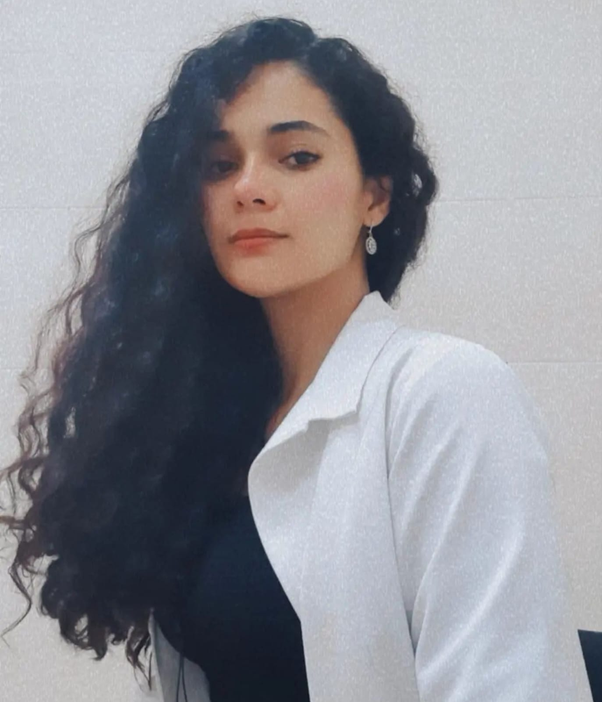

Bienvenidos

Hola!, Soy la Dra. Jessyca Cruz, soy egresada de la Facultad de Medicina y Cirugia de la Universidad Autonoma "Benito Juárez" de Oaxaca. Realizo valoraciones integrales a los pacientes y acorde a sus necesidades se da tratamiento especifico. Junto con un plan de ejercicios fisicos y de alimentacion, tendra mejoria en su estilo de vida y salud. Realice mi internado medico de pregrado en el Hospital "Centro Medico "Lic.Adolfo Lopez Mateos", y mi servicio social en el "Centro de salud de 2 nucleos basicos" en la comunidad de Pluma Hidalgo, Oaxaca.
CP:13778893